|
Yake WEI/卫雅珂
My research focuses on multimodal learning, with particular emphasis on understanding the internal mechanisms of heterogeneous modality integration and enhancing the external perception and cognition of multimodal intelligence.
I recently received my Ph.D. in Artificial Intelligence from Renmin University of China in June 2026, under the supervision of Prof. Di Hu. Grateful to everyone who supported me along the way.
Email /
Google Scholar /
GitHub
|
|
|
🔥 Research Interests
My research focuses on how multimodal systems learn from, perceive, and reason over heterogeneous signals such as vision, audio, and language. My work spans two complementary directions:
Internal Learning Dynamics. Leveraging cognitive neuroscience and mathematical tools to investigate the coordination, integration, and interaction of heterogeneous multimodal information within unified learning systems.
External Perception & Cognition. Advancing the perception and cognition of multimodal intelligence to support coherent understanding, reasoning, and interaction across complex physical and digital environments.
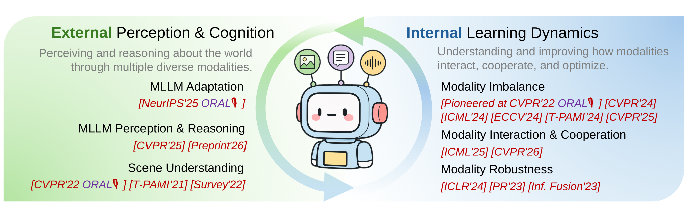
|
📰 News
[2026-07] Awarded the Wu Yuzhang Scholarship!
[2026-06] Attended CVPR 2026 Doctoral Consortium in Denver!
[2026-06] Gave a talk at CVPR 2026 Sight and Sound Workshop!
[2026-03] One paper was accepted by CVPR, thanks to all co-authors!
[2025-10] Organized the first online workshop for the BML community! Thanks to TechBeat and all speakers!
[2025-09] MokA was accepted by NeurIPS as an Oral paper! Thanks to all co-authors!
[2025-06] Released our new PEFT pipeline for MLLMs, MokA! [Project page]
[2025-06] Attended student workshop @ VALSE 2025 in Zhuhai!
[2025-05] One paper was accepted by ICML, thanks to all co-authors!
[2025-03] Two paper were accepted by CVPR, thanks to all co-authors!
[2025-02] Awarded the Baidu Scholarship (10 Ph.D students worldwide)!
[2024-12] Awarded the China National Scholarship for Ph.D student!
[2024-12] Attended the Global PhD Gathering @ 2024 Pujiang AI Conference in Shanghai!
[2024-11] Gave a talk about "Balanced multimodal learning" @ Virginia Tech! Thanks to Prof. Chris Thomas for the invitation!
[2024-09] One paper was accepted by T-PAMI, thanks to all co-authors!
[2024-07] Gave a talk about "Balanced multimodal learning" @ TechBeat! [Recording]
[2024-07] One paper was accepted by ECCV, thanks to all co-authors!
[2024-05] We released a survey on multimodal fusion with low-quality multimodal data! [arXiv]
[2024-05] One paper was accepted by ICML, thanks to all co-authors!
[2024-02] One paper was accepted by CVPR, thanks to all co-authors!
[2024-01] One paper was accepted by ICLR, thanks to all co-authors!
[2023-12] Started visiting at Human Sensing Lab @ CMU!
[2023-10] One paper was accepted by Pattern Recognition, thanks to all co-authors!
[2022-08] We released a survey about recent advances in audio-visual learning! [website]
[2022-05] Gave a talk @2022 BAAI Conference. Slides are available here!
[2022-03] Two papers were accepted by CVPR, thanks to all co-authors!
[2021-12] One paper was accepted by T-PAMI, thanks to all co-authors!
[2021-06] Graduated from the University of Electronic Science and Technology of China (UESTC)!
[Expand]
|
|
🏆 Selected Honors
2026 — Wu Yuzhang Scholarship (RUC’s highest student honor; awarded to 10 graduates annually).
2026 — Outstanding Graduate of Renmin University of China.
2026 — Selected to participate in the CVPR 2026 Doctoral Consortium.
2024 — Baidu Scholarship (10 PhD students worldwide).
2024 — National Scholarship for PhD Students (China’s highest student honor).
2021 — Outstanding Graduate of Sichuan Province (highest graduate honor awarded by Sichuan Province).
2021 — Outstanding Graduate of the University of Electronic Science and Technology of China.
Student Travel Award · NeurIPS 2025 · CVPR 2024
|
🎓 Education
|
|
Renmin University of China
Ph.D. in Artificial Intelligence · 2021–2026
|
|
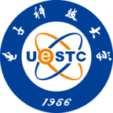
|
University of Electronic Science and Technology of China
B.E. in Computer Science and Technology · 2017–2021
|
|
📑 Selected Studies (∗ equal contribution)
|
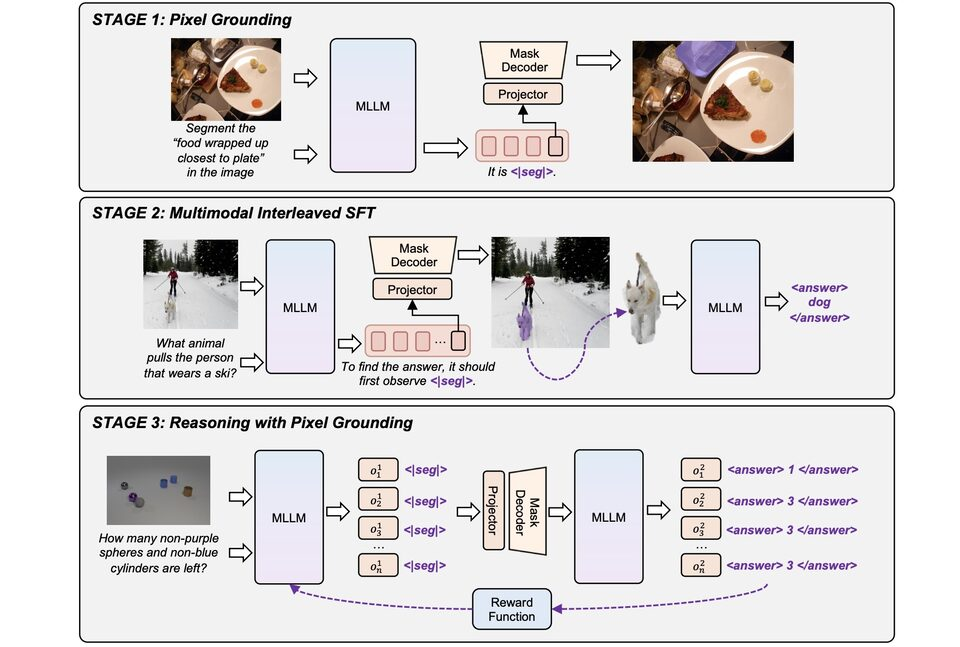
|
Segmentation before Answering: Pixel Grounding for MLLM Visual Reasoning
Yake Wei, Yuan Wang, Fengyun Rao, Jing Lyu, Di Hu
Preprint, 2026
arXiv
Use pixel grounding to enhance MLLM's fine-grained visual perception.
|
|
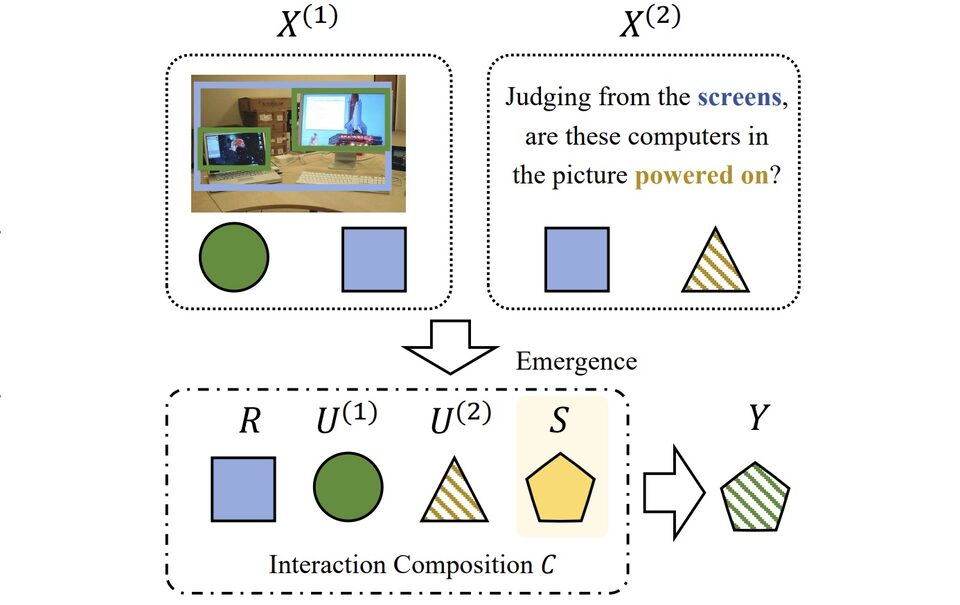
|
Information-Theoretic Decomposition for Multimodal Interaction Learning
Zequn Yang, Yake Wei, Haotian Ni, Zhihao Xu, Di Hu
CVPR, 2026
arXiv
Distinguish and strengthen multimodal interactions within the data.
|
|
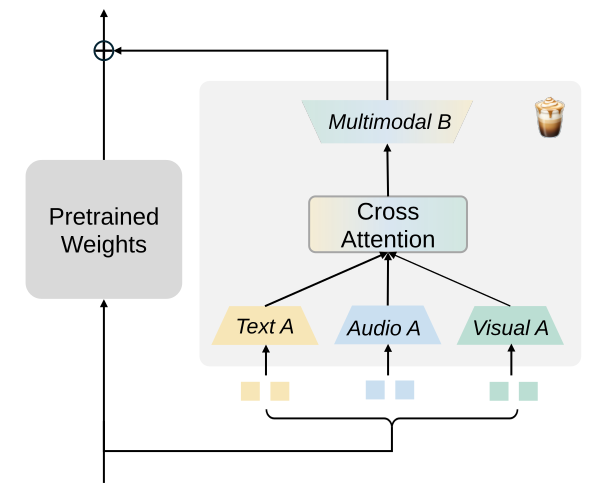
|
MokA: Multimodal Low-Rank Adaptation for MLLMs
Yake Wei, Yu Miao, Dongzhan Zhou, Di Hu
NeurIPS, 2025 (Oral Presentation, 1.46% of accepted papers)
Project page
A new PEFT pipeline for MLLMs, ensuring both uni-/cross-modal adaptation.
|
|
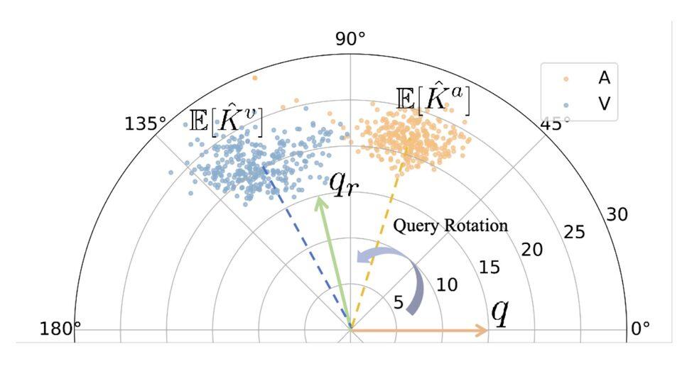
|
RollingQ: Reviving the Cooperation Dynamics in Multimodal Transformer
Haotian Ni, Yake Wei, Hang Liu, Gong Chen, Chong Peng, Hao Lin, Di Hu
ICML, 2025
arXiv / code
Rebalance and revive cooperation between modalities in Transformer.
|
|
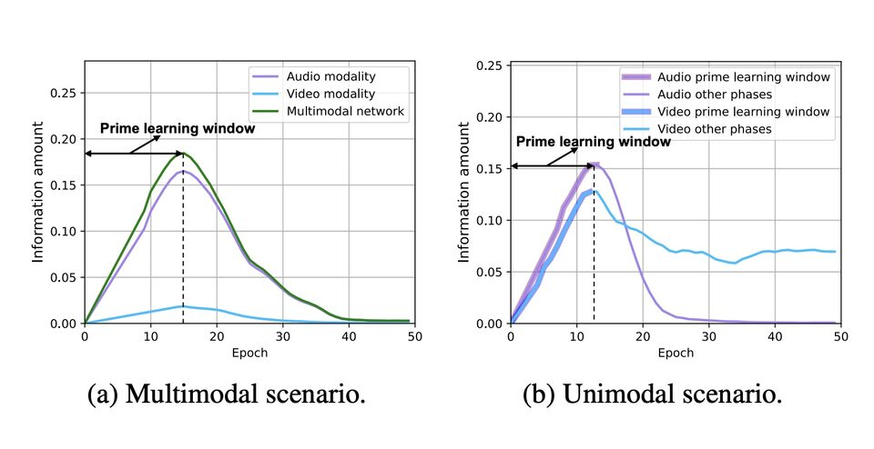
|
Adaptive Unimodal Regulation for Balanced Multimodal Information Acquisition
Chengxiang Huang*, Yake Wei*, Zequn Yang, Di Hu
CVPR, 2025
arXiv / code
Analyze and modulate information acquisition process during multimodal training.
|
|
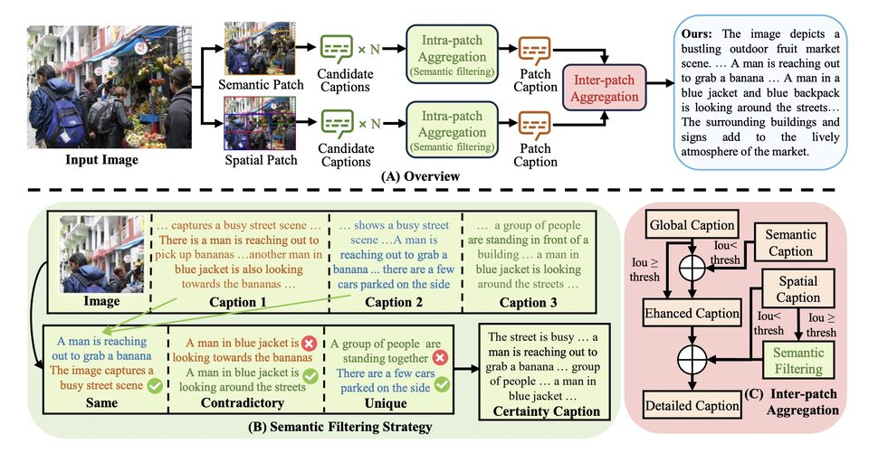
|
Patch Matters: Training-free Fine-grained Image Caption Enhancement via Local Perception
Ruotian Peng, Haiying He, Yake Wei, Yandong Wen, Di Hu
CVPR, 2025
arXiv / code
Generate high-quality image caption by divide-then-aggregate strategy.
|
|
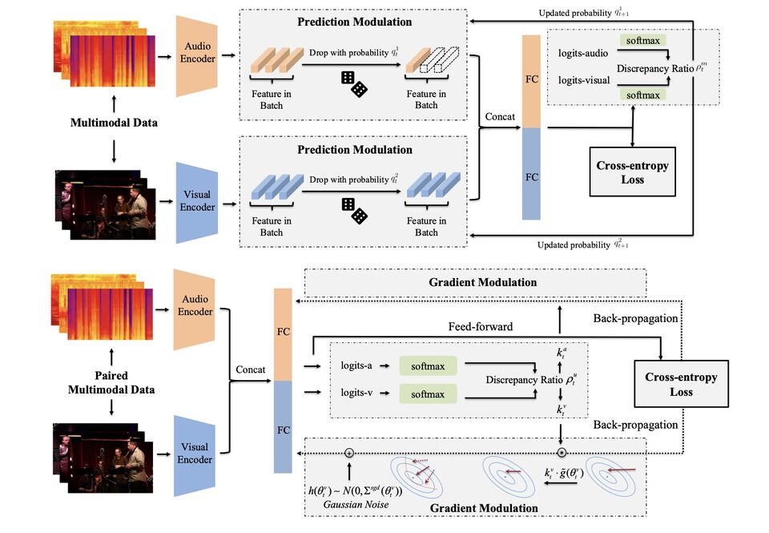
|
On-the-fly Modulation for Balanced Multimodal Learning
Yake Wei, Di Hu, Henghui Du, Ji-Rong Wen
P.S. Thanks the valuable help from Zequn Yang
T-PAMI, 2024
arXiv / code
Analyze and modulate imbalanced unimodal learning from both feed-forward and back-propagation stage.
|
|
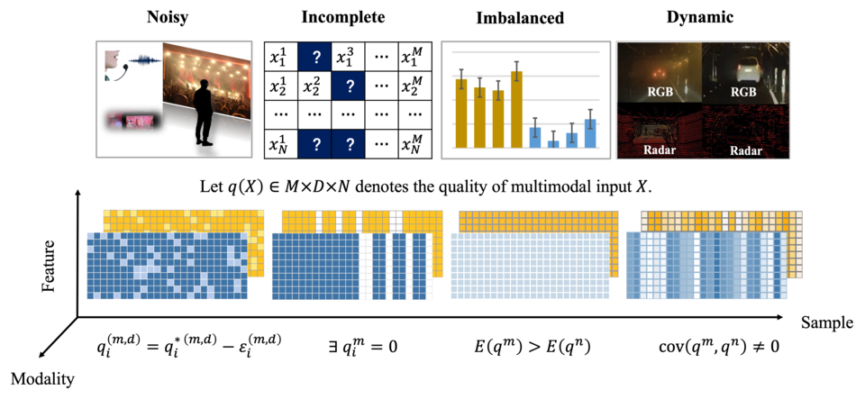
|
Multimodal Fusion on Low-quality Data: A Comprehensive Survey
Qingyang Zhang, Yake Wei, Zongbo Han, Huazhu Fu, Xi Peng, Cheng Deng, Qinghua Hu, Cai Xu, Jie Wen, Di Hu, Changqing Zhang
Information Fusion, 2026
arXiv / awesome list
A systematic survey about fusion of low-quality multimodal data.
|
|
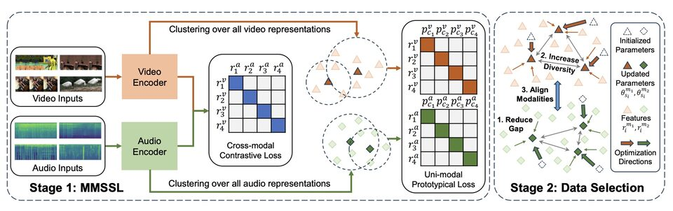
|
Enhancing Modality Representation and Alignment for Multimodal Cold-start Active Learning
Meng Shen, Yake Wei, Jianxiong Yin, Deepu Rajan, Di Hu, Simon See
ACM MM Asia, 2024
paper
Improve the quality of selected multimodal data pairs in active learning.
|
|
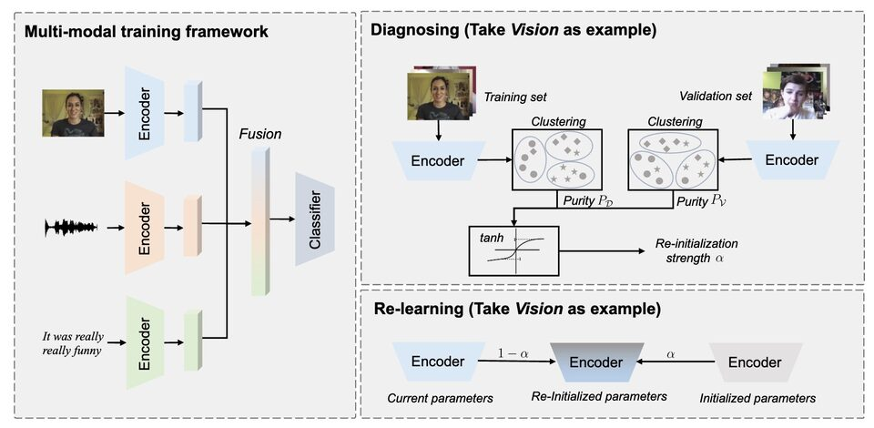
|
Diagnosing and Re-learning for Balanced Multimodal Learning
Yake Wei, Siwei Li, Ruoxuan Feng, Di Hu
ECCV, 2024
arXiv / code
Dynimically re-initialization to enhance both worse-/well-learnt modalities.
|
|
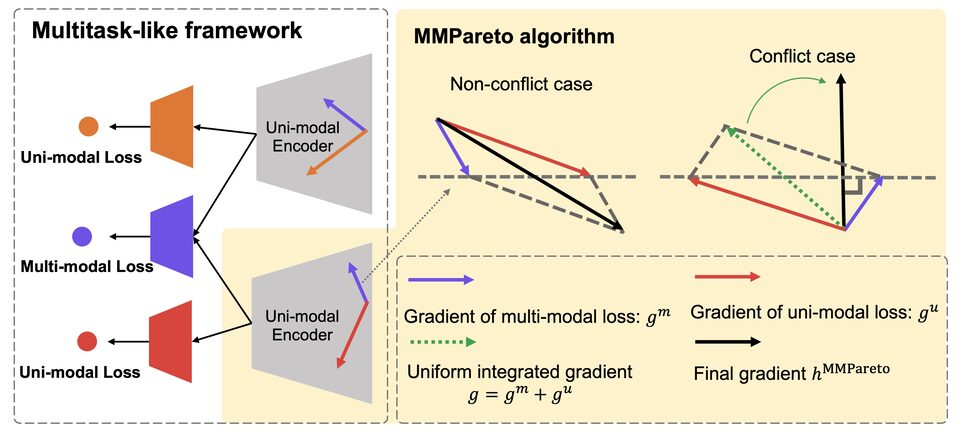
|
MMPareto: Boosting Multimodal Learning with Innocent Unimodal Assistance
Yake Wei, Di Hu
ICML, 2024
arXiv / code
Solve conflicts between multimodal and unimodal gradients.
|
|
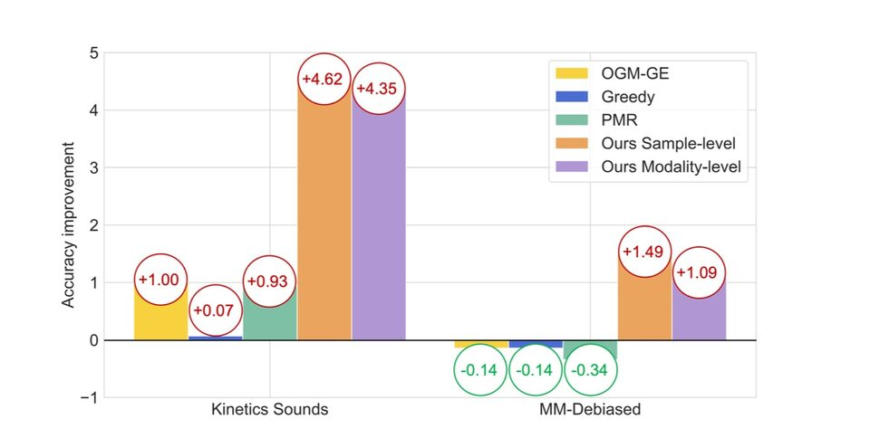
|
Enhancing Multimodal Cooperation via Sample-level Modality Valuation
Yake Wei, Ruoxuan Feng, Zihe Wang, Di Hu
CVPR, 2024
arXiv / code
Observe and improve the fine-grained cooperation between modalities.
|
|
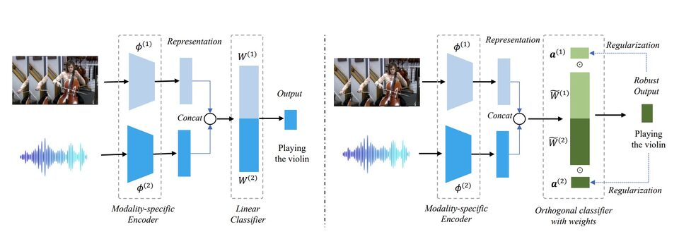
|
Quantifying and Enhancing Multi-modal Robustness with Modality Preference
Zequn Yang, Yake Wei, Ce Liang, Di Hu
ICLR, 2024
arXiv / code
Analyze essential components for multimodal robustness and delve into the
limitations imposed by modality preference.
|
|
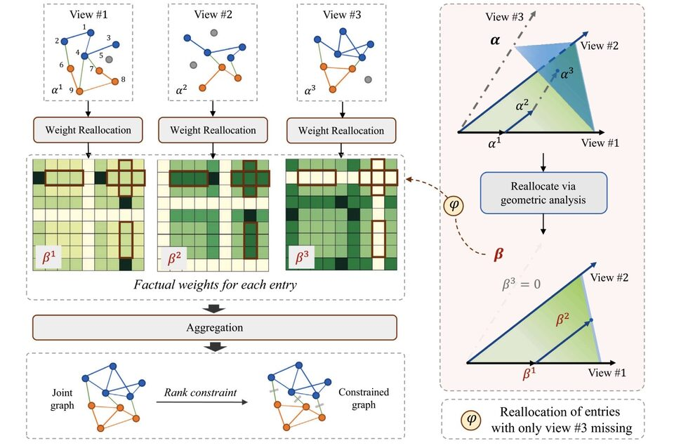
|
Geometric-inspired graph-based Incomplete Multi-view Clustering
Zequn Yang, Han Zhang, Yake Wei, Zheng Wang, Feiping Nie, Di Hu
Pattern Recognition, 2023
paper / code
Conduct geometric analyses to mitigate missing views in weight aggregation.
|
|
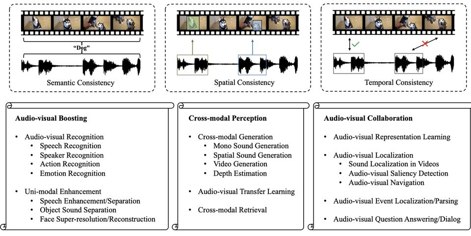
|
Learning in Audio-visual Context: A Review, Analysis, and New Perspective
Yake Wei, Di Hu, Yapeng Tian, Xuelong Li
Preprint, 2022
arXiv / website / awesome list
A systematical survey about the audio-visual learning field.
|
|
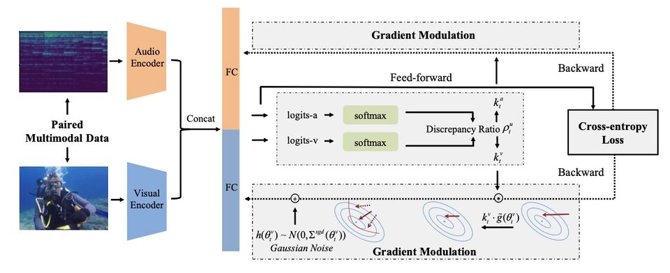
|
Balanced Multimodal Learning via On-the-fly Gradient Modulation
Xiaokang Peng*, Yake Wei*, Andong Deng, Dong Wang, Di Hu
CVPR, 2022 (Oral Presentation)
arXiv / code
Alleviate imbalance in multimodal learning via dynamic gradient modulation.
|
|
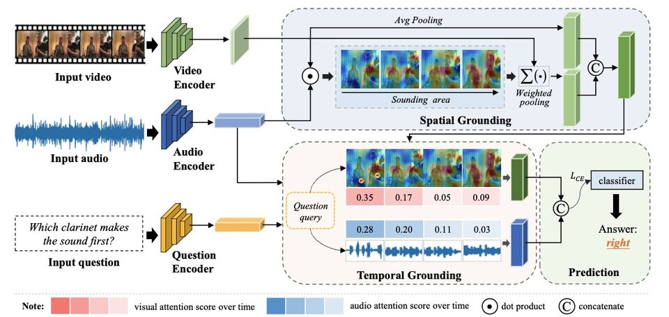
|
Learning to Answer Questions in Dynamic Audio-Visual Scenarios
Guangyao Li*, Yake Wei*, Yapeng Tian*, Chenliang Xu, Ji-Rong Wen, Di Hu
CVPR, 2022 (Oral Presentation)
arXiv / project page
Promote AVQA task and proposes MUSIC-AVQA dataset.
|
|
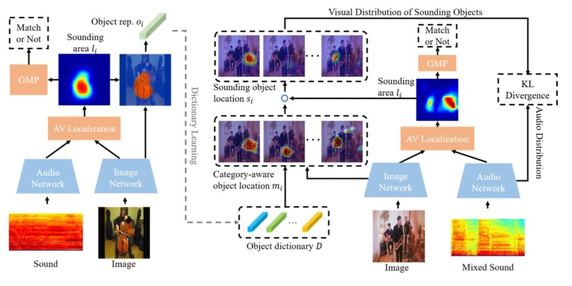
|
Class-aware Sounding Objects Localization via Audiovisual Correspondence
Di Hu, Yake Wei, Rui Qian, Weiyao Lin, Ruihua Song, Ji-Rong Wen
T-PAMI, 2021
arXiv / project page
Discriminative sounding objects localization.
|
|
🎙️ Selected Talks
Organized Activities
“Let's Talk about Balanced Multimodal Learning”
2025 — BML Workshop
Invited Presentations
“Vibe Coding and Anything”
2026 — AI Agents for Nuclear Physics Workshop
2026 — The Chinese University of Hong Kong (Shenzhen), Academic Seminar
“Unified Audio-visual Scene Understanding”
2026 — CVPR, Sight and Sound Workshop
“Vibe Coding: From Autocomplete to CLI Agent”
2026 — TechBeat
2026 — Renmin University of China, Gaoling School Academic Seminar
“Balanced Multimodal Learning”
2025 — VALSE Student Workshop
2025 — Peking University, CoRe
2024 — Global PhD Gathering, Pujiang AI Conference
2024 — Virginia Tech
2024 — TechBeat
“Exploration of Audio-visual Scene Understanding and Multimodal Learning Mechanisms”
2022 — BAAI Conference
Conference Oral Presentations
“MokA: Multimodal Low-Rank Adaptation for MLLMs”
2025 — NeurIPS — Oral Presentation
“Balanced Multimodal Learning via On-the-fly Gradient Modulation”
2022 — CVPR — Oral Presentation
“Learning to Answer Questions in Dynamic Audio-Visual Scenarios”
2022 — CVPR — Oral Presentation
|
|
{kind=link}